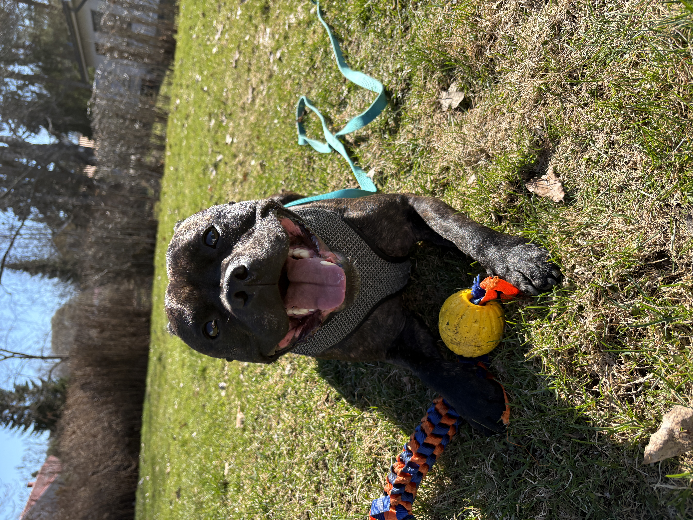

Päivystävä eläinlääkäribussi tarjoaa hoitoa nopeasti ja luotettavasti karvakaverillesi.
Saavumme paikalle, jopa 30 minuutissa. Eläinlääkäribussissa hoidamme eläintäsi parhaalla mahdollisella tavalla, oli sitten kysessä leikkausta tarvitseva hoito tai pieni vamman hoito.
Apunasi tilanteissa on ammattitaitoiset eläinlääkärit sekä teemme yhteistyötä eläinsairaaloiden kanssa, jos lemmikisi tarvitsee pidempää tarkkailua ja hoitoa.
Löydät sivultamme tarkempia tietoja hinnoista sekä palveluistamme sivuston yläpalkista.

Jokainen haluaa, että oma lemmikki saa parasta hoitoa, niinpä keksimme eläinlääkäribussin juuri sinulle, jolla on mahdollisesti ollut vaikeuksia päästä eläinlääkäriin. Me tuomme eläinlääkäripalvelut luoksesi eikä sinun tarvitse miettiä, miten kuljetat lemmikkisi hoitoon. Haluamme tarjota jokaiselle lemmikille turvallisen hoitoympäristön, jotta lemmikkisi tuntisi olonsa mukavaksi. Monelle lemmikille perinteinen eläinlääkäri käynti voi olla stressaava kokemus ja siksi haluamme tehdä hoidosta mahdollisimman rauhallista sekä eläimen että omistajan näkökulmasta.
Vastaanotollamme jokainen eläin kohdataan lempeästi, rauhallisesti sekä aikaa antaen. Tavoittenamme on rakentaa luottamuksellinen suhde lemmikkiisi, jotta hoitokokemus olisi mahdollisimman miellyttävä. Haluamme tehdä eläinlääkäripalveluista helposti saavutettavia ja aidosti eläinystävällisiä. Olipa kyseessä, mikä tahansa hoitotarve. Saat meiltä asiantuntevaa ja sydämellistä palvelua siellä missä sitä tarvitaan.